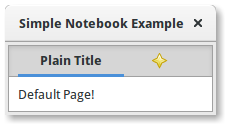

The Gtk.Notebook widget is a Gtk.Container whose children are pages that can be switched between using tab labels along one edge.
There are many configuration options for GtkNotebook. Among other things, you can choose on which edge the tabs appear (see Gtk.Notebook.set_tab_pos()), whether, if there are too many tabs to fit the notebook should be made bigger or scrolling arrows added (see Gtk.Notebook.set_scrollable(), and whether there will be a popup menu allowing the users to switch pages (seeGtk.Notebook.popup_enable(), Gtk.Notebook.popup_disable()).

import gi
gi.require_version('Gtk', '3.0')
from gi.repository import Gtk
class MyWindow(Gtk.Window):
def __init__(self):
Gtk.Window.__init__(self, title="Simple Notebook Example")
self.set_border_width(3)
self.notebook = Gtk.Notebook()
self.add(self.notebook)
self.page1 = Gtk.Box()
self.page1.set_border_width(10)
self.page1.add(Gtk.Label('Default Page!'))
self.notebook.append_page(self.page1, Gtk.Label('Plain Title'))
self.page2 = Gtk.Box()
self.page2.set_border_width(10)
self.page2.add(Gtk.Label('A page with an image for a Title.'))
self.notebook.append_page(
self.page2,
Gtk.Image.new_from_icon_name(
"help-about",
Gtk.IconSize.MENU
)
)
win = MyWindow()
win.connect("delete-event", Gtk.main_quit)
win.show_all()
Gtk.main()